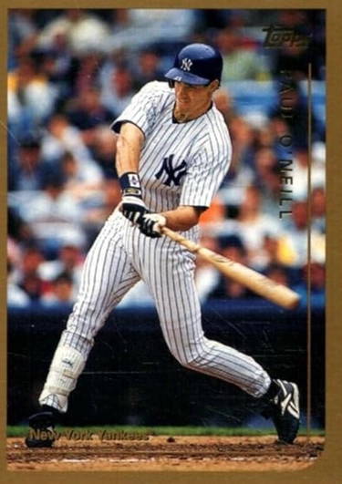

Paul O'Neill "The Warrior"
Career Highlights & Facts
(Facts are AI-generated and may require verification)
- Achieved the rare distinction of being on the winning side of 3 separate perfect games.
- Led the league in hitting during a shortened season with a .359 average.
- Earned the nickname 'The Warrior' for an intense, emotional style of play that included frequent outbursts at inanimate objects.
Would you like to find out more about Paul O'Neill?
Player Biography
Paul O’Neill
January 4, 2012
/
in
BioProject - Person
Batting Champions
1990s All-Stars
/
by
admin
James Lincoln Ray
Paul Andrew O’Neill was born in Columbus, Ohio, on February 25, 1963. His mother, Virginia, was a medical technician who raised the six O’Neill children – one girl and five boys – of whom Paul was the youngest. His father, Charles ‘Chick’ O’Neill, ran his own excavation business, but his true passion was baseball. A former minor league pitcher whose own father played professional baseball, “Chick” O’Neill passed on his knowledge of, and love for, the National Pastime to all six of his children. Paul’s great-grandfather, a Nebraska homesteader, married Mary Clemens, a cousin to Samuel Langhorne Clemens, better known to posterity as Mark Twain. Paul’s sister Molly is a food critic for
The New York Times
.
When Paul O’Neill was five years old, the family moved into a larger house that had a large, grass-covered and tree-shaded backyard that was a perfect template for a makeshift baseball field, where the children spent hours playing pickup games and competing in home run contests.
“That back yard was the best training ground for any future professional [ballplayer], and those home run derby games were especially ferocious,” O’Neill later recalled in his autobiography,
Me and My Dad
. The shape of the field also helped the youngest O’Neill develop a skill that would serve him well in his chosen profession: hitting the ball the other way. “The left-handers had to contend with our imposing maple tree in short right field . . . if the tree got a hold of a towering line drive and knocked back down onto the ground, guess what? It was an out. So I had to hit the ball to the opposite field to have a chance, and so the game taught me to go the other way,” he wrote.
Another favorable aspect of the new home was a little girl named Nevalee Davis, who lived a few houses away from the O’Neill family. Even as a six-year old, O’Neill recognized something special in his new friend. “Even at five years old, I was taken in by Nevalee. Sweet, pretty and smart, she was the girl next door, almost literally.”
Growing up in Ohio in the 1960s and early ’70s, O’Neill naturally became a fan of the Cincinnati Reds. “What I would have given to play on a team with
Pete Rose
or to throw a ball to
Johnny Bench
would have loved some fielding instructions from the great
Joe Morgan
,” he later recalled.
In the summer of 1970, Chick took Paul to his first major league game at Cincinnati’s
Crosley Field
to watch the Reds play the Pittsburgh Pirates. The younger O’Neill took a shine to the Bucs right fielder, a four-time batting champion and 12-time Gold Glove winner named
Roberto Clemente
, who wore uniform number 21. Years later, O’Neill reminisced about Clemente, “[there] was something special about the number 21 that settled into my psyche, somewhere in the back of my mind. Some say it was prophetic.”
Chick also coached Paul and the other O’Neill brothers in Little League. But he did more than that. Chick mowed and manicured the local baseball field every weekend so that his boys could play in a first class park. From a very young age, O’Neill was an intense competitor, acknowledging that as he moved through elementary school and middle school, he had begun playing with a purpose. “Being a Midwesterner and an O’Neill, I wore the game on my sleeve and couldn’t for the life of me understand how a person strikes out and likes it. I’m not that type of person. I carry failure around with me for a while.”
At 14, O’Neill enrolled as a freshman at Brookhaven High School in Columbus, where he played football, basketball and baseball. O’Neill was a star at the plate and on the mound, and as a junior, he hurled a no-hitter in the Columbus city championship. The next year, as graduation approached, O’Neill received college scholarship offers to play both baseball and basketball. He also drew the interest of professional baseball scouts, including, most importantly,
Gene Bennett
from the Cincinnati Reds.
After much soul-searching, O’Neill chose baseball and the minor leagues in lieu of college. (He did take classes at Otterbein College in future off-seasons.) The Cincinnati Reds, his hometown team, drafted O’Neill in the fourth round of the 1981 amateur draft. They assigned him to their rookie team in the Pioneer League, the Billings (Montana) Mustangs. In 66 games, the eighteen- year-old O’Neill hit .315 with 7 doubles, 2 triples and 3 home runs to go along with 29 RBIs and 37 runs scored. The Mustangs were a disappointment, however, finishing with a 30-40 record.
O’Neill played the 1982 season for the Reds Class A team in the Midwest League, the Cedar Rapids (Iowa) Reds. One of his teammates that year was a 20-year-old outfielder from Los Angeles named
Eric Davis
, with whom O’Neill would play as a major leaguer just a few years later. In 116 games in Cedar Rapids, O’Neill hit .272 with 8 home runs and 71 RBIs. The team finished at 61-79, last place in the league’s south division.
He began the 1983 season with the Tampa Tarpons of the Class A Florida League. While Davis jumped to AA ball, O’Neill found another future big league teammate in 23-year old left-handed pitcher named
Tom Browning
. O’Neill hit .278 with 8 home runs and 51 RBI. He spent the rest of the season in Waterbury, Connecticut, with the Waterbury Reds of the Double-A Eastern League. In 14 games, O’Neill hit .279 with no home runs and 6 RBIs.
O’Neill played the 1984 season for the Vermont Reds of the Eastern League.
Chris Sabo
and
Kal Daniels
, two more future Reds teammates, were both teammates in Vermont. O’Neill hit .265 with 31 doubles, 5 triples, 16 home runs, 76 RBIs and 29 stolen bases. The Vermont Reds finished fourth in the Eastern League with a 75-65 record.
After the season, on December 29, 1984, the 21-year old O’Neill married his childhood sweetheart, Nevalee Davis, in Columbus, Ohio.
In 1985, the Reds organization shipped O’Neill out west, to Colorado, promoted to the AAA Denver Zephyrs. It was a breakthrough season. In 137 games played, O’Neill hit .305, led the league in hits (155) and doubles (32). He also hit 7 home runs and knocked in 74 runs.
His great success in AAA led the Reds to call him up late in the season, and he made his big league debut on September 3, 1985, against the Cardinals in St. Louis when he pinch-hit for
Dave Van Gorder
in the top of the eighth inning. With one out and
Dave Concepcion
on first base, O’Neill singled to right, and the still speedy Concepcion advanced to third base. But then
Ron Oester
hit into a double play to end the inning.
O’Neill appeared in only four more games that September. In 12 at-bats, he had four hits, one double, one RBI and one run scored. He hit .333, slugged .417 and had a .750 OPS.
O’Neill spent time in the minors and majors in 1986, playing fifty-five games with Denver before he was brought back up to the Reds for a brief time, playing in three games and going 0-2.
O’Neill’s first year in the majors was 1987. Working primarily as a pinch-hitter, he only hit .143 with 2 home runs and 6 RBI in the season’s first half, in which he played 36 games and had 42 at-bats. In the second half of the season, Reds Manager Pete Rose increased O’Neill’s playing time. In 48 second-half games, O’Neill made 29 starts. The regular playing time helped with O’Neill’s timing, and soon he was comfortable at the plate. He hit .297 with 12 doubles, 5 home runs and 22 RBIs, and posted a .909 OPS.
In 1988, O’Neill finally became a full-time major leaguer. The Reds starting lineup included former minor league teammates Eric Davis, Kal Daniel, Chris Sabo, and Tom Browning, who made history on September 16, 1988, when he pitched a perfect game against the Dodgers. “With highlights like that, 1988 flew by, and in my first full-fledged, full-length season with the Reds, I came away with 16 home runs, 73 RBIs and 8 stolen bases” to go with his .252 batting average, he said later.
For the fourth straight season – all with Pete Rose as manager – the Red finished in second place. With a young core of promising, competitive hitters and pitchers, the Reds’ future looked bright, and when the 1989 season began, expectations were very high in Cincinnati. But nothing would go as planned for the Reds. On August 24, 1989, the Reds’ manager and all-time Hit King, Pete Rose, agreed to a lifetime ban from the game, because of his betting on baseball.
In the off-season, the Reds hired
Lou Piniella
as the team’s new manager. Like Rose, Piniella was a great baseball mind and a fierce, sometimes over-the-top, competitor. The Reds responded to their new manager, winning 91 games and the team’s first pennant in more than a decade, going wire-to-wire in first place.
One of the highlights of O’Neill’s 1990 season came on July 29 against the Giants in San Francisco’s Candlestick Park.
Scott Garrelts
, the Giants starter, had a no-hitter with two outs in the ninth inning when O’Neill stepped in the batter’s box. On the first pitch, he drove a single to center field to break up the no-hitter.
Offensively, O’Neill had another solid season, batting .270 with 16 home runs and 78 RBIs. He also played an excellent right field, leading all National League right fielders in fielding percentage (.993) and outfield assists (13).
In the National League Championship Series, the Reds faced the Pittsburgh Pirates, the team they lost to in the 1979 NLCS. In his first postseason at-bat, O’Neill doubled, driving in Eric Davis to put the Reds ahead, 3-0, in the first inning of Game 1. Despite the hot start, the Pirates chipped away at the Reds’ lead and won 4-3.
In Game 2, Pirates starter
Doug Drabek
was on his game, lasting eight innings and giving up five hits while striking out eight and walking two. If it hadn’t been for O’Neill, Drabek also would have gotten a win. The Reds right fielder struck in the bottom of the first with a single that scored
Herm Winningham
. When O’Neill came up in the fifth inning with Winningham on second and two outs, the score was tied at one apiece and tensions were running high. O’Neill stayed cool and slammed a double to deep left center field, scoring Winningham again and putting the Reds ahead 2-1. It turned out to be the deciding run, as the Cincinnati bullpen held the lead.
O’Neill sat out Game 3, a Reds 6-3 win, but he returned in Game 4 and made a huge impact. In the top of the fourth inning, the Pirates led 1-0 when O’Neill came to the plate against starter
Bob Walk
, and promptly crushed a home run deep into the right field stands. The homer lit a fire under the Reds, who went on to win 5-3.
After the Reds lost Game 5 against Drabek, who pitched brilliantly in a 3-2 Pirates win, the team bounced back the next day, winning 2-1 and taking home the franchise’s first pennant since 1976. For the series, O’Neill hit .471, with 3 doubles, one home run and 4 RBI. His 1.324 OPS led both teams. Although he didn’t win the Most Valuable Player of the NLCS – that honor went to relievers
Rob Dibble
and
Randy Myers
– O’Neill was clearly the hitting star of the series.
The Reds faced the defending World Champion Oakland A’s in the World Series. Led by two brilliant pitching performances from Series MVP
Jose Rijo
, the Reds took out the A’s quickly and easily, with a four-game sweep. O’Neill had a miserable time at the plate, however, managing just one single in 12 at-bats for an .083 batting average. He did earn five walks, but had only one RBI and one run scored. Nevertheless, he was now a world champion.
In 1991, O’Neill batted only .256, but he had the best power numbers of his career: 28 home runs and 91 RBI. With the bigger power numbers came bigger expectations for O’Neill, whom the Reds management now viewed as a potential home run champion. O’Neill saw himself as a line drive hitter, and for the first two months of the 1992 season, he was an excellent one, batting .361 with 29 RBI. But he’d only hit four home runs, and on several occasions he was told point blank: “we want you to hit more home runs.”
“My calling was never as a big home run hitter, and when I tried to be one, I fell flat on my face,” said O’Neill of his second half swoon, when he hit only .231. Paul’s attempt to swing for the fences led to the worst statistics of his major league career, batting .246 with 19 doubles, 14 home runs and 66 RBIs.
While O’Neill recognized that he had a poor season at the plate, and knew that the Reds brass was frustrated with his low power numbers, he felt his position with Cincinnati was safe. “Never in my worst nightmares did I think that would bring my tenure with my beloved Reds to an end.” But that is exactly what happened.
On November 3, 1992, the Reds traded O’Neill and minor leaguer Joe DeBerry to the New York Yankees for center fielder
Roberto Kelly
. At the time, the trade created quite a buzz. Kelly had been the Yankees top young prospect since he first signed an amateur contract 10 years earlier, and he was coming off a season in which he made his first All-Star team.
O’Neill was crushed by the news. He was being sent away from his hometown team, the only baseball organization for whom he had ever played. But his arrival a few days later in New York changed O’Neill’s initial feelings. “Once I’d set foot inside
Yankee Stadium
and met with [George] Steinbrenner and general manager
Gene Michael
, I could see that a whole new baseball life was out there,” he wrote.
That world included the Yankees first baseman and captain,
Don Mattingly
, whom O’Neill met on the first day of spring training in 1993. “Don was a tremendous influence on me. He played the game the way it should be played. From that day to this,” he wrote in
Me and My Dad
, “I can say that I have more respect for Don Mattingly than for anyone else I have ever played alongside in my entire career.”
O’Neill’s first season in New York proved a success. In addition to his defense, he hit .311 with 20 home runs and 75 RBIs. It was also a good year for the Yankees, who won 88 games and finished second in the American League East to the eventual world champion Toronto Blue Jays. In just one season, O’Neill’s intensity and production had made him a fan favorite and a team leader in New York. His status only grew in 1994, which turned out to be the best, and most disappointing, season of his professional career.
It began with an 8-game hit streak highlighted by a two-home run, five-RBI game against the White Sox on April 14. By the end of April, O’Neill was batting .448 with 6 home runs and 23 RBI. He didn’t slow down too much in May, either, batting .410 with 8 doubles, 4 home runs, and 12 RBIs. His batting average remained above .400 until June 17, and in July, he was named to his second All-Star team. O’Neill batted once in the game, in the eighth inning against Giants’ reliever
Rod Beck
, and popped out in the American League’s 8-7 loss.
The Yankees meanwhile, were playing their best baseball since the 1970s, compiling a 70-43 record and opening up a wide lead over the second place Orioles by the time August 12 rolled around. But rather than going for their 71
st
win on that day, O’Neill and the rest of the Major League Players Baseball Association went on strike.
Initially, O’Neill thought that the two sides would reach an agreement: “Never in my wildest thoughts, even in a worst case scenario, did I think the World Series would be canceled. The mere idea of canceling the rest of the season seemed ridiculous,” he said. But within a few weeks, it was clear that the two sides weren’t going to reach an agreement in time to save the season. On September 14, Commissioner
Bud Selig
made it official, canceling the rest of the regular season, the playoffs and the World Series.
O’Neill’s performance during the truncated 1994 season was outstanding. He led the American League in hitting with a career-high .359 average. It was the first batting title for a Yankee since Mattingly won in 1985. O’Neill also finished second in On-Base Percentage (.461), and fourth in slugging (.603) and OPS (1.064). In roughly two-thirds of a season, he hit 21 home runs, collected 25 doubles and collected 83 RBIs. He finished fifth in MVP voting.
O’Neill cashed in on his remarkable season, and signed a four-year Yankee contract worth $19 million. “Paul is thrilled with the deal,” O’Neill’s agent told
The New York Times
on the day the deal was announced. “He wanted to stay in New York. I think everyone knew that going in.”
The players’ strike finally ended on April 2, 1995, and the delayed season finally began on April 25. Because of the late start, the schedule was shortened from 162 games to 144. Continuing on the heels of his outstanding 1994 campaign, O’Neill had a strong first half in 1995. In only 52 games before the All-Star break, he was batting .346 with 11 home runs, 39 RBIs and 1.042 OPS.
When the second half began, however, the defending batting champion slumped badly. By August 30, his average had fallen 43 points, to .303. Like O’Neill, the Yankees struggled in August, and had fallen fifteen games behind the first place Red Sox in the American League East. But the Bombers were only 2 ½ games behind the Texas Rangers in the race for the inaugural American League wild card.
“What I needed was a big game,” O’Neill later recalled. He had a huge game on August 31, slamming a career-high three home runs against the California Angels. The first one came against starter
Brian Andersen
in the first inning, with
Bernie Williams
at first and
Wade Boggs
at second. In recalling the home run, O’Neill explained: “[I imagined] myself in that comfort zone of playing in my own backyard, aiming to hit it right on the button, I saw the ball, hit it, and could tell from the sound it was gone.”
In the bottom of the second, O’Neill came up again with two men on base. “I was a little more relaxed my next time up at bat, and again I hit another hard shot. Another 3-run homer.” In the bottom of the fifth, O’Neill smacked his third homer of the day. He later added an RBI single and finished the day with 8 runs batted in the 11-6 win.
It was the team’s third straight win, and the beginning of a late-season run in which they won 25 of their last 31 games and clinched the American League Wild Card on the last day of the season. For the year, O’Neill hit .300 with 22 home runs and 96 RBIs.
In their first postseason appearance in 14 years, the Yankees faced the American League West champion Seattle Mariners, a team loaded with sluggers including
Ken Griffey
,
Tino Martinez
,
Edgar Martinez
and former Yankee prospect
Jay Buhner
.
The Yankees won the first two games at Yankee Stadium. The second contest was a 15-inning nail-biter in which O’Neill hit a solo home run in the 7
th
inning off former Reds teammate
Norm Charlton
to tie the score. The Yankees finally won the marathon game on
Jim Leyritz’s
15
th
inning walk-off home run that landed just beyond the right field wall a few minutes after 1:00 in the morning.
The Mariners took the next two games, setting up a showdown in Game 5. In the top of the fourth inning, the Yankees were down 1-0 when O’Neill came to the plate against
Andy Benes
with Williams on first. Once again finding himself in a tough spot, O’Neill came through with a two run blast into the right field seats. In the sixth inning, he scored on a ground rule double by Don Mattingly that put the Yankees ahead 4-2.
The game turned out to be another thriller, perhaps even more exciting than Game 2. The Mariners eventually won in the bottom of the 11
th
inning when an Edgar Martinez double scored
Joey Cora
and Ken Griffey. “It was a devastating loss for me,” O’Neill lamented, “as if the series had been stolen right out from under us.” Though his team lost the series, O’Neill had been spectacular, hitting .333 with 3 homers and 6 RBIs.
The off-season brought a number of significant changes in New York. Don Mattingly, beset by chronic back problems, retired at the age of 34. Replacing him at first base was Seattle’s Tino Martinez, whom the Yankees acquired in an off-season trade.
The team also changed managers, deciding not to renew
Buck Showalter’s
contract despite the manager’s success, and hired
Joe Torre
as his replacement. O’Neill liked him and knew quickly that he was the right skipper for the Yankees ship. “Joe had an immediate calming effect on the team. He understood the ups and downs that a player goes through on the field, both offensively and defensively. It was the Torre way of doing things, a way that proved successful beyond our wildest dreams,” O’Neill said.
The Yankees moved into first place in the American League East on April 30, and never give up the lead, ultimately winning 92 games and their first full season divisional title in 16 years. For his part, O’Neill had another strong season, batting .302 with 35 doubles, 19 home runs and 91 RBIs. He also walked 102 times, the only time in his career in which he topped the century mark. The free passes pushed his on-base percentage to .411.
In the American League Division Series, the Yankees beat the Texas Rangers three games to one. O’Neill had a miserable time in the series, batting .133 with no extra base hits, no runs scored and no RBI.
The American League Championship Series pitted the Yankees against the Baltimore Orioles, who had disposed of the Cleveland Indians in their playoff series in four games. O’Neill was 0 for 3 in the Yankees won Game 1 win, an exciting contest that ended with Bernie Williams’ 11
th
inning walk-off home run. In Game 2, a Yankee loss, O’Neill singled and walked in three plate appearances. He sat out Game 3, but returned in Game 4 and hit a two-run home run off
Rocky Coppinger
that put the Yankees ahead 5-2 in an eventual 8-4 win. The Yankees also won Game 5, and took home their first American League pennant since 1981.
Their opponent in the World Series was the defending champion Atlanta Braves, who won 96 games and featured a three-headed monster of Cy Young Award winners:
Greg Maddux
,
Tom Glavine
and
John Smoltz
.
Games 1 and 2 were nightmares for the Yankees, who lost at home 12-1 and 4-0. But the Yankees hung tough and won Games 3 and 4. O’Neill was benched in favor of
Darryl Strawberry
in both contests. He returned in Game 5, a 1-0 Yankees victory in which O’Neill was 0 for 2 with 2 walks.
In the deciding Game 6, O’Neill started and ignited the Yankees 3-run rally in the bottom of the third inning with a line drive double to right field. One out later, he scored on a single by Yankees catcher
Joe Girardi
. With two outs in ninth inning,
Mark Lemke
popped up to third baseman
Charlie Hayes
, and for the first time 18 years, the Yankees were champions of the baseball world.
While in the locker room amidst the delirium and spraying champagne, O’Neill recalled his journey from Cincinnati Red to world champion Yankee. “For a moment I flashed back to that November day in 1992 when my future had seemed so bleak after hearing news that I’d been traded to the Yankees and my father had treated it like the best thing that could have happened. He had been right about everything.”
In 1997, the Yankees finished two games behind the Baltimore Orioles in the American League East, but were able to win the Wild Card. O’Neill had a great season, batting .324 with 42 doubles, 21 home runs and 117 RBIs. He also made his fourth All-Star team, and finished 12
th
in voting for the American League MVP.
The Yankees won the first game of the ALDS against the Cleveland Indians, an 8-6 slugfest highlighted by back-to-back-to back home runs by
Tim Raines
,
Derek Jeter
and O’Neill in the fifth inning. The Yankees lost Game 2 by a score of 7-5.
O’Neill came up huge in Game 3. With the bases loaded and the Yankees leading 2-1 in the top of the fourth inning, O’Neill came to the plate against Indians reliever
Chad Ogea
. With the way that Yankees starter
David Wells
had been pitching, a base hit could put the game out of reach. O’Neill worked the count full and fouled off two more pitches as the tension mounted. Then, on the eighth pitch of the at-bat, O’Neill drove Ogea’s pitch for a grand slam. The Yankees took a 6-1 lead, which ended up being the final score, and took a two games to one lead in the series.
But they lost the two final games, both very tough one-run defeats. Despite O’Neill’s outstanding performance – he hit .421 with 2 doubles, 2 home runs and 7 RBIs – the Yankees were finished for the year. O’Neill was crushed: “The off-season passed more slowly than it had in a while, my disappointment about losing to Cleveland gnawed at me long into December.”
When the 1998 season began, after a poor start, the Yankees went on a tear, winning eight straight games, and 26 out of 31. By the morning of May 17, they had opened a 3 1/2 lead over the Red Sox. The situation only improved on that Sunday afternoon when David Wells pitched a perfect game against the Minnesota Twins. O’Neill didn’t manage a hit in four at-bats, but he made the catch on the final out. It was the second perfect game in which O’Neill played.
The Yankees kept rolling through the summer, winning a then-American League record 114 games, and won the division by 22 games.
O’Neill hit .317, his sixth straight season of batting at least .300. He also hit 24 homers, collected 40 doubles and knocked home 116 runs.
The Yankees swept the Rangers in the ALDS. In the ALCS, they faced off against the Cleveland Indians, seeking revenge against the team that knocked the Yankees out of the playoffs just a year earlier.
In the bottom of the first inning of Game 1, O’Neill started a rally with an RBI single that scored
Chuck Knoblauch
. Two batters later, he scored the Yankees third run on a wild pitch. The Yankees never gave up the lead, and eventually won 7-2. O’Neill added a double in the seventh inning, and finished the day 2-5 with an RBI and two runs scored.
Games 2 and 3 went to the Indians, setting up a critical Game 4 in Cleveland. Another Yankee loss would put them down 3 games to 1, a scenario that O’Neill and the Bombers desperately wanted to avoid. In the first inning, O’Neill set the pace when he ripped a line drive home run into the right field seats to put the Yankees ahead 1-0. In the fourth inning, he walked, stole second base, and scored on a single by
Chili Davis
that put New York ahead 2-0 in an eventual 4-0 win.
The Yankees started off hot in Game 5, rallying for three runs in the first inning. O’Neill contributed with a double and a run scored. He added an RBI single in the second inning to put New York up 4-2 in a game they won 5-3. They also prevailed in Game 6, a 9-5 win that put the Yankees in the World Series for the second time in three years. For the series, O’Neill hit .280 with 2 doubles, one home run, 3 RBIs and 6 runs scored.
In the World Series, the Yankees faced the San Diego Padres. Game 1 was a thriller, a Yankee win that was highlighted by a seven run rally in the bottom of the seventh inning that put the Yankees ahead for good in a 9-6 win. O’Neill was 0 for 5.
Game 2 was a 9-3 Yankee blow-out in which O’Neill singled once in five at-bats and scored a run. In Game 3, the Yankees were down 3-0 heading into their half of the seventh inning. A
Scott Brosius
solo home run and a Padre error that allowed a run closed the gap to 3-2. In the eighth inning, O’Neill walked and later scored on Brosius’ second home run of the game, a three-run shot that put New York ahead for good.
The Yankees completed the sweep the next night, a 3-0 win. O’Neill doubled, singled and scored a run in the clincher. For the Series, O’Neill had only 4 hits in 19 at-bats and did not drive home a run, but he did score three runs and play stellar defense. For the third time in his career, Paul O’Neill was a world champion.
O’Neill got off to a strong start in 1999, batting .297 with 4 home runs and 20 RBIs in April. Then he slumped miserably in May. By May 25, his average had dropped to .244. At one point, he was 1 for 25 with runners in scoring position.
”I’ve never felt this badly,” he told catcher Joe Girardi, who reminded his teammate that he had fought through worse slumps. ”I’m lucky to be here at this point,” O’Neill lamented to the
New York Times
, “Obviously it’s frustrating to go through a time like this; I don’t think I’ve ever been through a time this bad. I’m not going to get any better sitting here doing nothing, so you’ve got to play through it and hope things turn around.”
On May 25 he broke out of the slump with 3 hits in 4 at-bats, and then went 2-for-5 the next day. In June, he hit .334 and drove in 20 runs. By the time the All-Star break rolled around, O’Neill was back up to .297. In July, he continued his hot hitting. Batting .305 with 10 doubles, 5 home runs and 19 RBIs.
On July 18 against the Montreal Expos, O’Neill played in the third perfect game of his career. “In my life, I had now been struck by the lightning of three perfect games, Tom Browning’s, David Wells’s and
David Cone’s
,” he said. O’Neill remains the only player in history to be on the winning team in three perfect games.
The Yankees ended the regular season with 98 wins, and won their third A.L. East title in four years. O’Neill finished the season at .285 with 39 doubles, 19 home runs and 110 RBIs. However, on October 2, he suffered an injury that would hinder his postseason play.
“There was a foul ball that was popped up in my direction, and I just went after it and after it, and I smacked directly into the right-field wall, coming away with a cracked rib.” O’Neill, a man familiar with combat against inanimate objects, sardonically joked in his autobiography, “the wall didn’t give an inch, so I guess it won.”
In the American League Divisional Series, the Yankees swept the Texas Rangers but O’Neill was limited because of the rib injury. He played in two of the games, managing 2 singles in 8 at-bats with no RBI. In the American League Championship Series, they faced the Red Sox. O’Neill played a little better, but clearly had no power in his swing, batting 6-21 (.286) with no extra base hits and only 1 RBI.
At the time, O’Neill was also dealing with more than just the rib injury. His father suffered a massive heart attack in June, and when the playoffs began, Chick O’Neill lay in Lenox Hill Hospital in New York City, in good spirits but with his health failing. When the Yankees were home, O’Neill usually slept in his father’s hospital room. When the elder O’Neill developed pneumonia and a staph infection right before the World Series, he rapidly declined. It was with this on his mind that Paul O’Neill began the 1999 World Series against the Atlanta Braves.
Game 1 was a pitching duel between
Orlando Hernandez
and Greg Maddux. With the game tied at one apiece, O’Neill came to the plate with the bases loaded. The Braves brought in left-handed closer
John Rocker
, a flamethrower who had held lefty hitters to a .140 batting average that year. “I went up to the plate and worked the count to 3-1. I knew he had to come in with a pitch and throw a strike. I saw my pitch and got a base hit, scoring 2 runs,” O’Neill recalled. The hit put the Yankees ahead, 3-1, and they hung on to win 4-1.
The Yankees won the second game in Atlanta, 7-2. O’Neill started the scoring with an RBI single in the first inning, and went 1 for 4 in the game.
When the team returned home, O’Neill’s father was nearing the end. Paul stayed at the hospital the night before Game 3 as he watched his father until he had to leave for the Stadium. He managed a single that tied the game in the first inning. The Yankees ultimately won the game 6-5 on a 10
th
inning walk-off home run by
Chad Curtis
.
A few hours after the game ended, Chick O’Neill died of lung and kidney failure. O’Neill spent the day attending to his family and making funeral arrangements, and he considered not playing that night in Game 4. But when his mother told him that “you father would want you to play well tonight.” And so when the Yankees took the field, O’Neill, emotionally drained and in constant pain from the cracked rib, trotted out to his usual position in right field.
He went 0-3 with a walk in the Yankees 4-1 win, a victory that clinched the team’s third World Series title in four years, and O’Neill’s fourth career championship. But the joy of the victory quickly gave way to the sadness of reality. O’Neill said: “Whatever it was, I kept it together until right after the last out. Then as Joe Torre pulled me into the huddle at the pitcher’s mound, I couldn’t hold back anymore and I lost it again as I hugged Joe and
Mike Stanton
.”
Although he briefly contemplated retirement after the World Series, O’Neill decided to return when the Yankees picked up his $6.5 million option. Speaking to
The New York Times
, O’Neill acknowledged: “I’m excited because we go to spring training as the defending World Series champs. I was happy they picked it up because that made it easy for me. I’m where I want to be.”
The Yankees once again won the division. O’Neill had another good year, batting .283 with 18 home runs, and 100 RBIs.
After getting past the Oakland A’s and Seattle Mariners in the first two rounds of the post-season, the Yankees faced the New York Mets in the 2000 World Series. It was the first “subway series” in 44 years.
In the bottom of the ninth inning of Game 1, the Yankees trailed 3-2. With one out, O’Neill came to bat against the big, hard-throwing right-hander
Armando Benitez
. He worked the count full, fouling off tough pitch after tough pitch as the crowd grew louder and louder with each foul ball. The at-bat demonstrated just how tenacious Paul O’Neill was at the plate; it also showed how much the New York faithful loved him for it. On the 10
th
pitch of the at-bat, O’Neill took ball four and trotted down to first base.
After consecutive singles by
Luis Polonia
and
Jose Vizcaino
, Chuck Knoblauch hit a sacrifice fly to left that scored O’Neill to tie the score 3-3. In the 10
th
inning, O’Neill came up with the bases loaded and one out, but he swung at the first pitch and grounded into an inning-ending double play. The Yankees ended up winning the game 4-3 in 12 innings.
The Yankees also won Game 2, and O’Neill went 3-4 with an RBI in the hard fought 6-5 victory. He also starred in Game 3, going 3-4. With the score tied 1-1 in the 4
th
inning of Game 3, O’Neill ripped an RBI triple to put the Yankees ahead by a run. The Yankees lost 4-2. The defeat snapped a 14-game World Series winning streak and pulled the Mets back into contention.
In the second inning of Game 4, O’Neill tripled and scored, and the Yankees won 4-2. They also won Game 5, another thriller won in the top of the ninth inning when
Luis Sojo
punched a two out, two-run single. It was the third straight title for the Yankees, something that hadn’t been done since the Oakland A’s of the early 1970s. O’Neill hit .474 with two doubles and two triples. Interestingly, he hadn’t tripled during the regular season.
When the season ended, O’Neill’s status for the 2001 season was uncertain. His contract had expired, he was 37 years old and he had a tough late season and post-season run because of a nagging hip injury that he suffered in August. Once again, he was considering retirement or even playing for another team closer to his hometown in Columbus.
But on November 16, 2000, O’Neill signed a one year contract for $7.25 million. During the summer, he informed some of the Yankees’ beat reporters that he had decided to retire after this season, but that he would not make a formal announcement until after season because he did not want his personal plans become a distraction for the team.
On September 2 in
Fenway Park
, O’Neill came within one strike from playing in his fourth perfect game. Yankee starter
Mike Mussina
had shut down the Red Sox for 8 2/3 innings, striking out 13 batters without allowing a single base runner. But with two strikes, Boston’s Carl Everett looped a single to center field to bust Mussina’s bid for perfection.
On September 7, O’Neill suffered a stress fracture in his left foot that landed him on the disabled list. Four days later, New York City was attacked by terrorists who hijacked and flew two commercial airliners into the World Trade Center Towers. Baseball was put on hold. The Yankees, including O’Neill, in hard hats and oxygen masks, visited Ground Zero and the Armory, comforting workers and family members, and giving out toys to children.
Play resumed on September 18, but O’Neill remained on the disabled list until October 3. He was still far from 100% healthy, and the Yankees were watching him closely to see if he could produce in the post-season. When he returned to the lineup on October 3, he went 2-4, hit a two-run home run, and was named to the playoff roster.
Despite missing 25 games, the 38-year old O’Neill posted some solid statistics. He hit .267 with 33 doubles, 21 home runs and 70 RBIs. He also stole 22 bases, making him the oldest player in history to have at least 20 home runs and 20 steals in one season. The Yankees won their fourth straight division championship.
In the American League Division Series, the Yankees lost the first two games to the Oakland A’s. O’Neill failed to get a hit in eight at-bats in those games. But they rebounded and won the next three games to take the series. O’Neill appeared only in Game 4, a 9-2 win in which he doubled and scored a run.
In the American League Championship Series, the Yankees faced the Seattle Mariners, winners of a record-tying 116 regular season games. O’Neill hit a two run homer in Game 1, a 4-2 Yankees win. New York also prevailed in Game 2, a 3-2 victory in which O’Neill singled once in three at-bats.
The Mariners absolutely pummeled the Yankees in Game 3, but New York took the next two contests. O’Neill homered and singled in the Game 5 clincher as the Yankees won in a rout, 12-3. It was their fourth consecutive American League pennant. For the series, O’Neill hit .417 with 2 home runs and 3 RBIs.
The Arizona Diamondbacks, a team in its fourth year of existence, won the National League pennant and were set to challenge the Yankees for the championship. Although he still hadn’t announced it officially, word of O’Neill’s planned retirement was leaked to the media, and speculation throughout Yankeedom was that O’Neill was playing in his final few games.
The Diamondbacks took Games 1 and 2 easily, but the Yankees took Game 3 on the strength of a
Roger Clemens
pitching gem. In Game 4, things looked pretty bleak throughout. The Yankees couldn’t manage much against Diamondbacks starter
Curt Schilling
, who held them to one run in seven innings. In the eighth inning, reliever
Byung-Hyun Kim
struck out the side in order.
Trailing 3-1 with one out in the ninth inning, O’Neill poked a single to left field. Bernie Williams then struck out, bringing Tino Martinez to the plate with two outs. One more out and the World Series would likely be out of reach for the Bombers. Martinez, however, didn’t make an out. Rather, he drove Kim’s first pitch over the wall in center field. O’Neill and the 56,000 fans on hand went crazy as he and Tino crossed the plate. One inning later, Derek Jeter hit a walk-off, game-winning home run to even up the Series.
Game 5 was a virtual carbon copy of Game 4. The Yankees were trailing 2-0 in the top of the ninth inning of Game 5. Knowing that O’Neill was almost certainly playing his last game at Yankee Stadium, the fans chanted ”Paul O’Neill! Paul O’Neill!!” in rapid fashion, over and over, for several minutes as the ninth inning began. Fans held up signs that read: “We’ll Miss You, Paulie!” and “One More Year!”
When O’Neill returned to the dugout after the top half of the inning ended. Again, the crowd struck up the “Paul O’Neill” chant, and for a moment, he stood atop the steps, tears welling up in his eyes, and doffed his cap to show his love for the fans.
In the bottom of the ninth inning, Scott Brosius hit a two-out, two-run home run that tied the game at 3-3. The Yankees went on to win the game and take a 3 games to 2 lead in the Series. They were now just one win from their fourth straight championship, something that hadn’t been done in 50 years.
But it was not to be. Arizona crushed the Yankees in Game 6, and in Game 7, they improbably scored two runs in the bottom of the ninth inning off
Mariano Rivera
, and won the game 3-2. It was a brutal end to a rewarding career for O’Neill.
For his career, O’Neill hit .288 with 451 doubles, 21 triples and 281 home runs. He scored 1,041 runs and collected 1,269 RBI. He batted over .300 six times and knocked in at least 100 runs four times. He won one batting title and was voted to five All-Star games. He was part of six pennant winners and five world champion teams. In his extensive post-season experience (85 games and 340 plate appearances), O’Neill hit .284 with 11 home runs and 39 RBIs.
After retiring, O’Neill returned home to Ohio, where he resides with his wife and three children. Since 2002, O’Neill has worked as an in-game color commentator and analyst for the New York Yankees YES Network. He also maintains a web page at
http://www.pauloneill21.com/
, which sells memorabilia in support of his charities.
Last revised: May 29, 2011
Sources
Paul O’Neill with Burton Rocks,
Me and My Dad
, copyright 2003, Harper Collins.
Anonymous, “Yankees Are Playing Like Bronx Bombers Again,”
The New York Times
, June 21, 1993.
Ira Berkow, “O’Neill Moves on Gracefully,”
The New York Times
, November 7, 2001.
Murray Chass, “Stewart Can Argue, But Reds Are Best,”
The New York Times
, October 22, 1990.
Jack Curry, “Yankees Trade Roberto Kelly to Reds for O’Neill,”
The New York Times
, November 4, 1992.
Jack Curry, “Yanks Give O’Neill $19 Million Contract,”
The New York Times
, October 29, 1994.
Jack Curry, “Yanks in Command After 312 New York Minutes,”
The New York Times
, October 6, 1995.
Jack Curry, “Yanks Awaken to the Dim Light of the Off Season,”
The New York Times
, October 10, 1995.
Jack Curry, “After Torre Pinches Himself, The Yankees Are Still Champions,”
The New York Times
, October 28, 1996.
Jack Curry, “O’Neill’s Grand Slam Powers the Yanks to the Brink of Advancing,”
The New York Times
, October 5, 1997.
Jack Curry, “For O’Neill, Best Years Are to Come”
The New York Times
, October 7, 2001.
Jack Curry, “O’Neill Makes His Presence Felt Immediately,”
The New York Times
, October 4, 2001.
Jack Curry, “An Emotional End for All the O’Neills”
The New York Times
, November 2, 2001.
Jack Curry “Breaking the News to Paul O’Neill About No. 21,”
The New York Times
, Feb 14, 2008.
Buster Olney, “Yankees Sweep Series and Ensure Legacy,”
The New York Times
, October 22, 1998
Buster Olney, “Yankees Offense Stalls as O’Neill Slumps,”
The New York Times,
May 25, 1999.
Buster Olney, “O’Neill Plays on Hours After Father Dies,”
The New York Times,
October 28, 1999.
Buster Olney, “O’Neill Finds Comfort With Comfort Being With His Friends,”
The New York Times
, October 30, 1999.
Buster Olney, “Yankees Demand to Keep O’Neill and Strawberry,”
The New York Times
, November 3, 1999.
Buster Olney, “Yankees Want O’Neill Back, and The Feeling is Mutual,”
The New York Times
, November 5, 2000.
Buster Olney, “O’Neill Returns to Yanks for One More Run,”
The New York Times
, November 17, 2000.
Buster Olney, “O’Neill, at 38, Becomes Oldest 20-20 Player,”
The New York Times
, August 26, 2001.
Buster Olney. “O’Neill Finds It Tough to Take Off Pinstripes,”
The New York Times
, November 3, 2001.
Obituary, “Paul O’Neill’s Father Dies,”
The New York Times
, October 28, 1998.
Richard Sandomir, “O’Neill Returning to Yankees in Studio 3,”
The New York Times
, January 10, 2002.
Newyorkyankees.com
Wikipedia.com
Baseball-Reference.com
Baseball-Almanac.com
Retrosheet.org
Full Name
Paul Andrew O'Neill
Born
February 25, 1963 at Columbus, OH (USA)
Stats
Baseball Reference
Retrosheet
Tags
Batting Champions
·
1990s All-Stars
·
Career Totals
| WAR | AB | H | HR | BA | R | RBI | SB | OBP | SLG | OPS | OPS+ |
|---|---|---|---|---|---|---|---|---|---|---|---|
| 38.8 | 7318 | 2105 | 281 | .288 | 1041 | 1269 | 141 | .363 | .470 | .833 | 120 |
Statistics via Baseball-Reference.com
The Original Clue